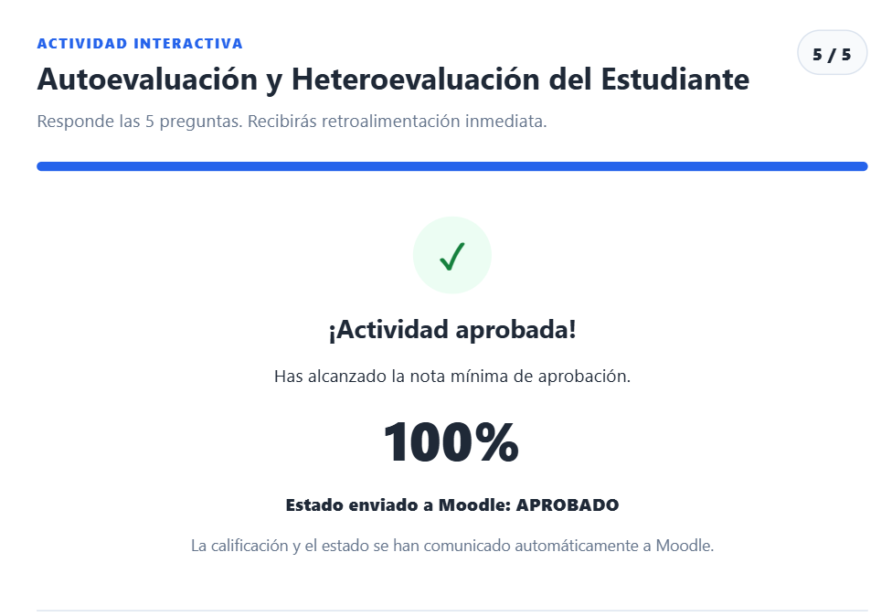
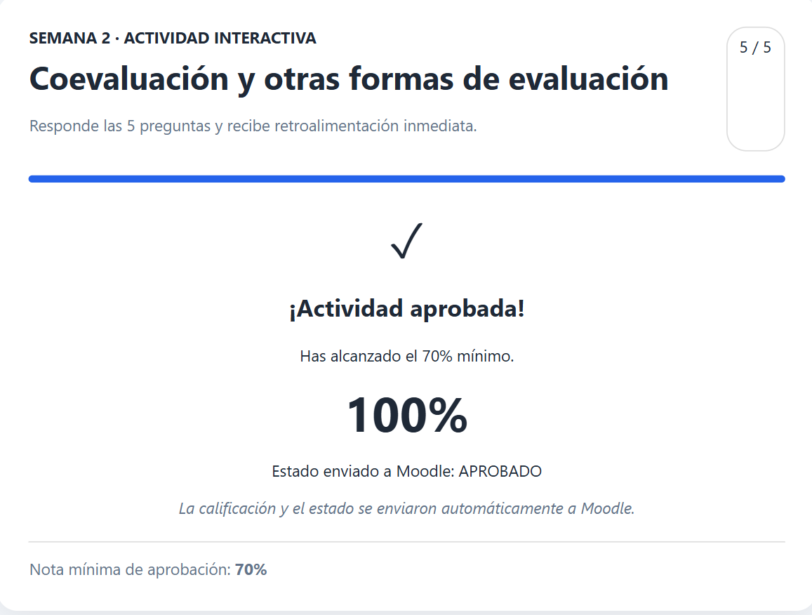

Análisis Crítico de Casos
Analizar situaciones problemáticas de autoevaluación y heteroevaluación en posgrado, diseñando rúbricas analíticas e interpretando discrepancias para diseñar planes de intervención pedagógica.
Primer Laboratorio y Evaluación Parcial: Arquitectura de la evaluación formativa, desarrollo metacognitivo y mediación dialógica en la educación superior universitaria.
Mapa de navegación secuencial y articulación de las evidencias curriculares
Marco teórico-epistemológico y justificación de la evaluación formativa en entornos virtuales
La evaluación en la educación superior virtual representa una oportunidad histórica para superar el modelo punitivo y estandarizado del veredicto terminal. Durante décadas, la evaluación universitaria ha funcionado predominantemente como un dispositivo de control administrativo destinado a certificar resultados cuantitativos al final de un período, desaprovechando su verdadero potencial: mediar en el aprendizaje, desarrollar la metacognición y orientar la toma de decisiones pedagógicas continuas.
En los Entornos Virtuales de Aprendizaje (EVA), la distancia física y la asincronía exigen que la evaluación se configure como una práctica dialógica permanente. Como afirman Black y Wiliam (2009), la evaluación formativa cobra sentido cuando la información recabada es efectivamente utilizada por docentes y estudiantes para modificar las actividades de enseñanza-aprendizaje, transformando el error en una palanca de perfeccionamiento mediante el feed-forward.
Este Portafolio Digital constituye el producto integrador del Primer Laboratorio y Evaluación Parcial de la cátedra Evaluación Educativa en Entornos Virtuales, correspondiente a la Maestría en Docencia Universitaria en Entornos Virtuales de la Universidad Dr. Andrés Bello. A través de este espacio, se articulan las dimensiones clave del aprendizaje: la autoevaluación como detonante de la autorregulación personal (Zimmerman, 2002); la coevaluación como ejercicio cooperativo para cultivar el juicio evaluativo (Boud & Falchikov, 2007); y la heteroevaluación como criterio experto y orientador que garantiza la validez de las competencias profesionales esperadas.
Propósitos formativos de aprendizaje y justificación de la estructura de evidencias
Demostrar y consolidar la apropiación teórico-práctica y reflexiva de los modelos de evaluación formativa, autoevaluación, coevaluación y heteroevaluación en la educación superior virtual, mediante la recopilación deliberada, el análisis sistemático y la valoración crítica de evidencias de aprendizaje orientadas a la innovación y transformación de la práctica docente universitaria.
Analizar situaciones problemáticas de autoevaluación y heteroevaluación en posgrado, diseñando rúbricas analíticas e interpretando discrepancias para diseñar planes de intervención pedagógica.
Fundamentar y diseñar el cierre de la coevaluación entre pares en entornos virtuales ("El Ciclo Crítico"), asegurando el desarrollo del juicio evaluativo y el uso tangible de la retroalimentación.
Estructurar una propuesta integral de evaluación universitaria virtual basada en las 6 preguntas epistemológicas, la taxonomía de Bloom y una rúbrica analítica por niveles de logro.
Reflexionar críticamente sobre el propio desempeño a partir de las calificaciones obtenidas en el EVA, proyectando metas de mejora y cualificación docente para la educación superior.
Compendio documental, instrumentos y análisis metacognitivo de las Semanas 1 y 2
Resolución académica y metodológica de dos escenarios pedagógicos reales: Caso 1: Autoevaluación en un curso virtual de posgrado y Caso 2: Heteroevaluación de una actividad colaborativa virtual. La actividad implicó asumir el rol de docente responsable, fundamentar los conceptos evaluativos, diseñar dos rúbricas analíticas estandarizadas, interpretar resultados cuantitativos y cualitativos, y formular planes docentes de toma de decisiones pedagógicas.
Problema abordado: En una maestría virtual, los estudiantes entregan propuestas técnicamente correctas en Moodle pero muestran dificultades para identificar sus debilidades y fortalezas. El docente incorpora una autoevaluación reflexiva previa a la calificación definitiva.
Interpretación de la simulación: Un estudiante obtiene Objetivos: 4/4, Coherencia: 3/4, Actividades: 4/4, Recursos: 3/4 y Evaluación: 2/4 (Total: 16/20 pts = 80% o 8.0/10). El análisis revela una brecha crítica en el componente evaluativo: el estudiante diseña qué enseñar y qué actividades hacer, pero carece de competencias para construir instrumentos válidos de verificación (fisura en el alineamiento constructivo de Biggs).
Toma de decisiones: La autoevaluación no se utiliza de forma punitiva. Se implementan dos acciones de mejora: 1) Taller de alineamiento constructivo con matriz de trazabilidad en Moodle; y 2) Laboratorio de diseño y calibración de rúbricas analíticas.
Problema abordado: Tres equipos presentan propuestas dispares en un aula virtual: Equipo A (excelente teoría, poca aplicación práctica); Equipo B (práctico y creativo, poca coherencia objetivos-actividades); y Equipo C (propuesta equilibrada).
Puntuaciones fundamentadas: Equipo A: 15/20 (7.5); Equipo B: 15/20 (7.5); Equipo C: 17/20 (8.5). Aunque el Equipo A y B obtienen la misma nota numérica, sus perfiles formativos son radicalmente opuestos: uno requiere traducir la teoría a instrumentos y el otro alinear sus actividades a las metas curriculares.
Intervención docente: Se establecen 4 acciones pedagógicas: Taller de alineamiento (Equipo B), Laboratorio de instrumentos (Equipo A), Pilotaje con grupo focal (Equipo C) y Segunda entrega acompañada de una matriz de cambios fundamentados.
Actividad colaborativa en equipos sobre la coevaluación en entornos virtuales. Como integrantes del Equipo 4: Cierre del ciclo y transformación, resolvimos el dilema de cómo diseñar el cierre de una actividad virtual para que los estudiantes demuestren tangiblemente que han utilizado la retroalimentación de sus pares para mejorar su producto final o comprensión del tema.
«Desde mi perspectiva, el cierre ideal sería solicitar la entrega del producto final acompañado de un breve video, audio o microcápsula interactiva de reflexión (de 1 a 2 minutos). En esta presentación, el estudiante debe contrastar brevemente la versión original de su trabajo, mencionar los aportes más valiosos que recibió durante la coevaluación de sus pares, y argumentar con evidencias cómo esos comentarios transformaron y mejoraron la versión definitiva. De esta manera, no solo se evalúa el producto tangible modificado, sino también la capacidad del estudiante para interiorizar la crítica constructiva, fomentando una verdadera metacognición y apropiación de su proceso de aprendizaje».
Diseño didáctico completo de una estrategia de evaluación universitaria en modalidad 100% virtual para la cátedra Formulación y Evaluación de Proyectos de Innovación Tecnológica. La propuesta responde exhaustivamente a las seis preguntas epistemológicas, adopta la modalidad de Tarea Ex Aula con Andamiaje y Entregas Progresivas, alinea los criterios con los niveles superiores de la Taxonomía de Bloom (Analizar, Evaluar, Crear) e incluye una Rúbrica Analítica Digital completa graduada en 4 niveles de desempeño (Puntaje Total: 10.0 / 100%).
Consigna: Los estudiantes seleccionan una micro o pequeña empresa real de su localidad, investigan su cadena de valor, identifican una oportunidad de mejora digital (comercial, logística o administrativa) y diseñan una propuesta viable con objetivos SMART, análisis FODA, cronograma de hitos y presupuesto justificado. Se entrega un informe digital estructurado (máximo 12 páginas, APA 7) y un video de sustentación de 3 minutos.
| Criterio y Ponderación | Excelente (100%) | Bueno (75%) | Aceptable (50%) | Insuficiente (25%) |
|---|---|---|---|---|
| 1. Diagnóstico FODA (20% - 2.0 pts) | Diagnóstico preciso y contextualizado; analiza a profundidad las 4 dimensiones tecnológicas. | Identifica los cuatro cuadrantes con buen análisis, aunque omite detalles técnicos menores. | FODA general o superficial con poca fundamentación en la realidad del negocio. | Diagnóstico descontextualizado o confuso; omite factores críticos. |
| 2. Público Objetivo (10% - 1.0 pto) | Segmentación exhaustiva con variables demográficas, conductuales y digitales claras. | Define el público de forma adecuada, con leve falta de precisión psicográfica. | Descripción genérica de clientes sin especificar hábitos de consumo digital. | No define el público o la segmentación es incongruente con el negocio. |
| 3. Objetivos SMART (10% - 1.0 pto) | Objetivos específicos, medibles, alcanzables, realistas y temporales alineados al FODA. | Objetivos pertinentes pero con debilidad en sus metas métricas de medición. | Confunde objetivos de aprendizaje o metas empresariales con simples tareas. | Objetivos ausentes, confusos o contradictorios con el diagnóstico. |
| 4. Estrategias Digitales (25% - 2.5 pts) | Soluciones tecnológicas innovadoras, realistas y viables a la escala de la MYPE. | Propuestas pertinentes y viables con desarrollo técnico moderado. | Propuestas genéricas o con alto riesgo de inviabilidad financiera. | Estrategias inviables o desvinculadas de la problemática diagnosticada. |
| 5. Plan y Presupuesto (20% - 2.0 pts) | Cronograma de hitos detallado, responsables claros e inversión cotizada con rigor. | Plan coherente y presupuesto aproximado; requiere afinar plazos específicos. | Cronograma vago o presupuesto desfasado de los costos de mercado. | Planificación inexistente; no define responsables ni costos. |
| 6. Presentación y APA (15% - 1.5 pts) | Estructura impecable, redacción académica, video elocuente y citas APA 7 exactas. | Buena redacción y sustentación clara con detalles menores de formato. | Dificultades notorias de estructura, redacción confusa o citas incompletas. | Desorganizado, sin sustento de fuentes o plagio detectado. |
Capturas de pantalla originales que acreditan la aprobación con la nota máxima (100% - 5/5 respuestas correctas) en las actividades interactivas formativas desarrolladas en la plataforma Moodle durante las semanas 1 y 2 del curso.


Metodología de curaduría crítica y aseguramiento de la calidad de evidencias
Actividad primaria orientada a compilar sistemáticamente todos los productos, borradores, interacciones en foros y registros de trabajo generados durante las dos primeras semanas de la maestría. Siguiendo las orientaciones de la cátedra, el criterio de recolección se basó en la finalidad del curso: documentar la evolución del juicio evaluativo, desde el dominio de las corrientes educativas hasta la toma de decisiones pedagógicas y el diseño de rúbricas analíticas.
La selección respondió a criterios estrictos de representatividad, profundidad y relevancia curricular. No se trasladó el contenido indiscriminadamente, sino únicamente las mejores producciones que evidenciaran de forma contundente la adquisición de conocimientos y habilidades docentes: la resolución de casos con simulación matemática, el cierre formativo de la coevaluación, la formulación de una evaluación auténtica con rúbrica Bloom y la verificación de dominio en el EVA con 100% de aprobación.
Metacognición integradora y metas formativas para la innovación docente universitaria
La construcción de este portafolio digital ha marcado un hito en mi formación pedagógica en la maestría. Me ha permitido transitar de una visión instrumental y sancionadora de la evaluación hacia una perspectiva holística, dialógica y humanista. He comprendido que evaluar es enseñar dos veces: cuando planificamos la mediación y cuando retroalimentamos para guiar la autorregulación.
El portafolio se erige así no como un depósito inerte de tareas, sino como un dispositivo metacognitivo vivo donde el docente-maestrante examina sus propias concepciones pedagógicas, visibiliza sus saltos cualitativos y proyecta compromisos éticos con la educación superior salvadoreña.
Actualizar el 100% de las tareas de mis materias universitarias incorporando rúbricas analíticas digitales en Moodle compartidas desde el primer día del ciclo académico.
Implementar talleres de coevaluación entre pares sustentados en la Escalera de Retroalimentación de Perkins y exigir videos de reflexión metacognitiva para el cierre de los proyectos.
Diseñar y liderar proyectos de investigación aplicada sobre evaluación formativa automatizada en la educación técnica y tecnológica universitaria en El Salvador.
Aplicación formal de la Rúbrica para Evaluar el Portafolio de Evidencias (Docente Titular)
| Criterio Oficial | Ponderación | Nivel Asignado | Justificación Analítica de Desempeño | Puntuación |
|---|---|---|---|---|
| 1. Portada | 1% | Muy Bien | Incluye nombre del autor, institución y asignatura con datos institucionales completos. Título sugerente: "Portafolio Digital de Evaluación Educativa en Entornos Virtuales". Considera fecha (Octubre 2026) y lugar (Sonsonate, El Salvador). | 10 / 10 |
| 2. Objetivo | 1% | Muy Bien | Objetivo general y específicos plenamente congruentes con los contenidos de las tareas; representan el aprendizaje obtenido y fundamentan la razón por la cual se estructuran de esa forma las evidencias. | 10 / 10 |
| 3. Evidencias | 3% | Muy Bien | Incluye todos los tipos de evidencias solicitadas para las 2 semanas: análisis de 2 casos prácticos (E1), enlace y síntesis de la actividad colaborativa "El Ciclo Crítico" (E2), diseño de evaluación universitaria con rúbrica Bloom (E3) y capturas de retroalimentación 1 y 2 al 100% en Moodle (E4). Todas demuestran avances palpables en los aprendizajes esperados. | 10 / 10 |
| 4. Organización | 1% | Muy Bien | Todos los documentos y secciones están estructurados de forma impecable: constan de encabezados limpios, layout responsivo moderno, navegación interactiva, tablas estandarizadas y lenguaje explicativo formal. | 10 / 10 |
| 5. Reflexión | 3% | Muy Bien | Las reflexiones de cada evidencia describen la propia actividad, analizan y valoran el aprendizaje realizado, y establecen comparaciones explícitas con situaciones análogas reales de la práctica docente universitaria en El Salvador, cumpliendo con el nivel de máxima excelencia. | 10 / 10 |
| 6. Ortografía | 1% | Muy Bien | El portafolio de evidencias está redactado con pulcritud gramatical y ortográfica, sin errores léxicos ni tipográficos, preservando un tono académico universitario fluido. | 10 / 10 |
Fuentes teóricas, pedagógicas e investigativas en formato APA 7.ª edición